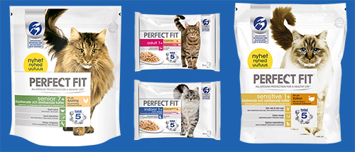
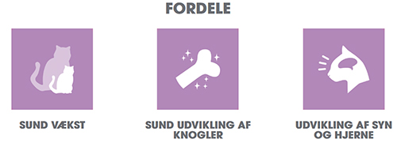

Nye produkter
Så kom de endelig
Eftersom forholdet med din kat er mest givende, når hun er glad, sund og fuld af liv, stræber vi efter at give næring til og pleje hendes ungdommelige sind hver dag gennem hele livet. Derfor har vi udviklet et sortiment af højkvalitets våd- og tørfoder til katte, der sørger for at hun, uanset alder og livsstil, vil få en komplet ernæring, der adresserer de mest udbredte helbredsbehov, for et sundt liv.
Ud over vores unikke PERFECT FIT™ Total indeholder alle produkter i vores udvalg også 3 ekstra sundhedsfordele, som er sammensat specifikt til at dække din kats behov, så du er sikker på, at din kat får den rette ernæring. Ydermere er vores produkter fremstillet med højkvalitets proteiner, så vi kan trygt fortælle dig, at din kat vil også nyde det, han/hun spiser!
En ubesværet fordøjelse og højkvalitets proteiner er vigtig for opbygningen af sunde muskler, og det gælder især ungkatte, hvis behov for proteiner er større end de voksne katte. PERFECT FIT™ har et højt indhold af proteiner (41 %), der stammer fra en Højkvalitets kilde, nemlig kylling.
For at sikre optimal knogledannelse i de tidlige måneder er der behov for en bred vifte af næringsstoffer. Forskning viser, at en mineralbalance bestående af især kalcium og fosfor er vigtig for at sikre, at killingen udvikler sunde knogler. Forholdet i PERFECT FIT™ opfylder eksperternes anbefaling.
PERFECT FIT™ understøtter udviklingen af syn og hjerne gennem et tilskud af DHA fra naturlige kilder. DHA er et næringsstof, der også findes i morens mælk, og det er kendt for at være gavnligt for synet og understøtte hjernens udvikling.
Del artiklen med dine venner